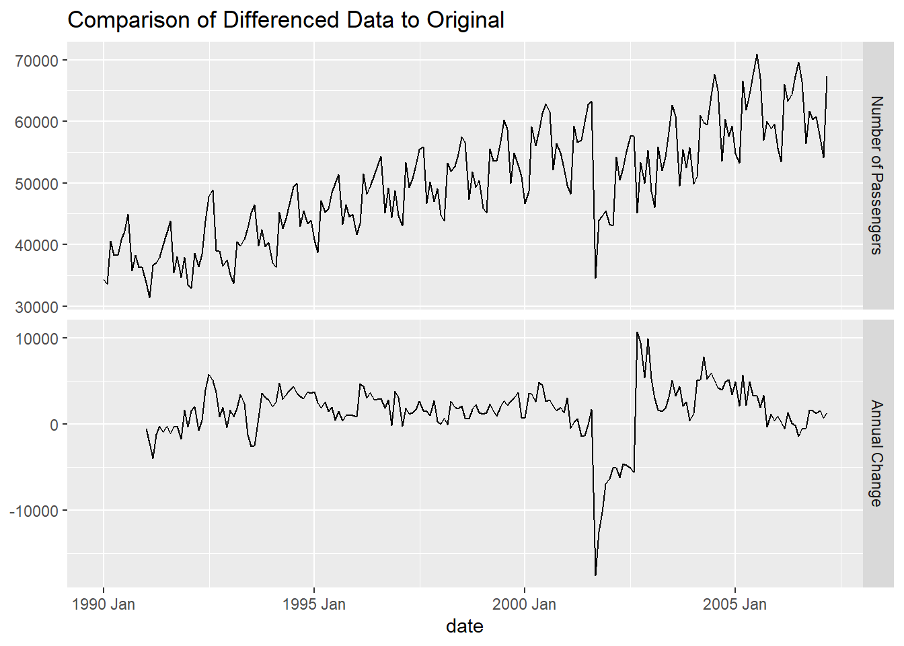
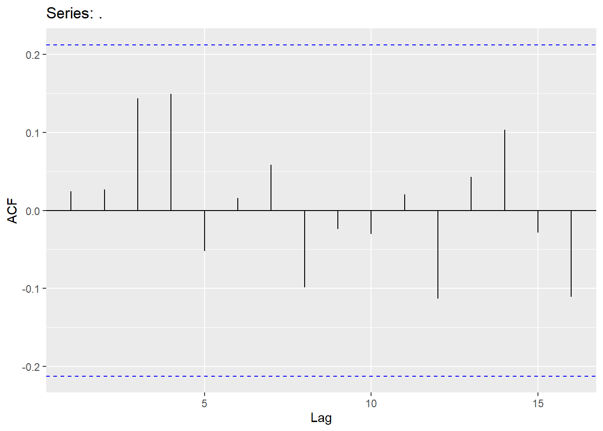

Chapter 5 Seasonal ARIMA
5.1 Seasonality
Seasonality is the component of time series that represents the effects of seasonal variation. The seasonal component of a time series is the repeated pattern over a fixed period of time. For example, the airlines dataset we’ve been working through (shown below) shows seasonality every 12 observations (12 months) where we see different patterns in summer and holiday times of the year as compared to other times of the year. Seasonality occurs over a fixed and known period of time.
autoplot(USAirlines_ts, Passengers) + labs(title="Time Series plot for Passengers", x="Date",y="Passengers")
The length of the seasonal periods is denoted as S. Therefore, seasonal factors repeat every S units of time.
As mentioned in the stationarity section, seasonal models are not stationary by default because the time series doesn’t revert to a long term mean. When your data has both trend and seasonality, the seasonality should be the first problem you try and correct to make stationary. We do this because making the data stationary by accounting for the seasonality might also account for trend. This is not true for trend. Our process for building ARIMA models is the following:
Similar to when we accounted for trend, seasonality can be solved with a deterministic or stochastic solution.
Deterministic - Seasonal dummy variables, Fourier transformations, predictor variables
Stochastic - Seasonal differences
Once data is made stationary, we can model with traditional and seasonal ARIMA approaches. When we forecast our data we account for the deterministic or stochastic solution above and build that into our forecasts.
5.2 Seasonal “Unit-Root” Testing
Similar to trend, we can perform statistical tests to try and evaluate whether we need to take a seasonal difference or perform more deterministic solutions. However, seasonal unit root tests have problems with large seasonal frequencies - values of S that are larger than 12. To counter these problems with seasonal unit roots we use measures of seasonal strength instead:
\[ F_S = \max{(0, 1 - \frac{Var(E_t)}{Var(S_t + E_t)})} \]
where \(E_t\) is the error component and \(S_t\) is the seasonal component. These components both come from a time series decomposition of the data. If \(F_S < 0.64\) then no seasonal differencing would be recommended, while if \(F_S \ge 0.64\) then take one seasonal difference.
The only downside of this approach is that if your data has any real amount of seasonality it would just recommend taking the differences without any notion of deterministic solutions. Therefore, this really isn’t an approach to compare whether you should use deterministic or stochastic solution for your specific problem. In practice, we typically model our data with both deterministic and stochastic solutions and compare the forecasts to see which was more accurate.
Let’s see how to evaluate this in each of our softwares!
5.2.1 R
R has this functionality built in with its unitroot_nsdiffs option inside of the features function. We just need to specify the variable we want to calculate this test on, which for us is the variable Passengers. The output reports the number of seasonal differences it suggests (either 1 or 0) based on the cut-off described above.
## # A tibble: 1 × 1
## nsdiffs
## <int>
## 1 15.2.2 Python
Python doesn’t have a built in function at the time of writing this to calculate this. However, we can easily calculate this ourselves from the time series decomposition we have done in previous sections. Inside of our StatsForecast function we use the MSTL function with a frequency set to monthly data. This MSTL function calculates the STL version of the decomposition. We then use the fit function with the df = option to specify our training data we want to decompose. We can then use the .fitted_[0,0].model_ functions to print out each of the above components for each observation in our training data.
from statsforecast import StatsForecast
from statsforecast.models import MSTL
dcmp = StatsForecast(models = [MSTL(season_length = 12)], freq = 'M')
dcmp.fit(df = train_sf)## StatsForecast(models=[MSTL])## data trend seasonal remainder
## 0 34348.0 39019.258306 -4656.823649 -14.434657
## 1 33536.0 38883.031147 -5824.358016 477.326868
## 2 40578.0 38749.491951 1252.474783 576.033266
## 3 38267.0 38618.251802 -554.512182 203.260380
## 4 38249.0 38488.211305 388.631112 -627.842417
## .. ... ... ... ...
## 202 60341.0 62515.681097 -2946.195752 771.514655
## 203 60791.0 62606.870904 -1594.438482 -221.432422
## 204 57233.0 62699.163218 -6078.039540 611.876322
## 205 54140.0 62792.107128 -7499.634204 -1152.472924
## 206 67342.0 62885.168552 4003.645894 453.185554
##
## [207 rows x 4 columns]Now that we have our components, we can calculate \(F_S\) by hand. We just use the var function from numpy to calculate the variance.
import numpy as np
FS = 1 - (np.var(result['remainder'])/(np.var(result['remainder']) + np.var(result['seasonal'])))
FS## 0.91401238623057095.2.3 SAS
SAS doesn’t have a built in function at the time of writing this to calculate this. However, we can easily calculate this ourselves from the time series decomposition we have done in previous sections. By default SAS will provide the classical decomposition. In the PROC TIMESERIES procedure, we use the data =option to provide our training data and the plots = (series decomp) option to ask SAS for a plot of the original data series and a plot of the decomposition. The outdecomp option saves the dataset with teh decomposition of our time series. The ID statement is where we provide our date variable and specify our monthly seasonality with the interval = month option. Next, in the VAR statement we provide our target variable, Passengers.
proc timeseries data = work.train plots = (series decomp) outdecomp = decomp;
id date interval = month;
var Passengers;
run;Now that we have our components, we can calculate \(F_S\) by hand. First, we need to combine our seasonal and error components represented in our data as SC and IC respectively. Once we combine these together in a DATA STEP we can use the PROC MEANS procedure to calculate the variance of each of them. We just use the var option in the PROC MEANS statement and name the variables in the VAR statement. From there we can use another DATA STEP to calculate the value of \(F_S\) and print it out with the PROC PRINT procedure.
data decomp;
set decomp;
S_E = SC + IC;
run;
proc means data = decomp var;
var IC S_E;
run;
data calculation;
FS = 1 - (0.0011888/0.0084828);
run;
proc print data = calculation;
run;The tests above suggest taking a seasonal difference. However, let’s solve our problem with both a deterministic approach and stochastic approach to see which is better for our data.
5.3 Deterministic Solution
Unlike trend, there are many different approaches to accounting for seasonality deterministically. The approaches we will discuss are seasonal dummy variables, Fourier transforms, and predictor variables.
Seasonal Dummy Variables
Seasonal dummy variables are exactly what their name implies. We will use a set of dummy variables to account for the seasonal effects in our dataset. For a time series with S periods within a season, there will be S-1 dummy variables - one for each period (and one accounted for with the intercept).
Since our US airlines dataset is monthly, we will build a dummy variable for each month and pick one to not include. For example, we could build the following model:
\[ Y_t = \beta_0 + \beta_1JAN + \beta_2FEB + \cdots + \beta_{11}NOV + e_t \]
In the above model, we chose to leave out the month of December’s dummy variable since our model has an intercept. In fact, the intercept \(\beta_0\) is the average effect of December. Each of the coefficients on the respective variables measures the average difference in effect from that month and December (our reference level).
Let’s see how to do this in each of our softwares!
5.3.1 R
Adding external variables to an ARIMA model in R is quite straightforward. By using the formula structure in the ARIMA function in the model function (from the fable package), we can add these dummy variables to our model as well as build out an automatic ARIMA model. We specify that the Month variable in our dataset is a categorical variable with the factor function. To prevent the model from automatically trying to take a seasonal difference we use the PDQ function where we specify the D = 0 option.
model_SD_ARIMA <- train %>%
model(ARIMA(Passengers ~ factor(Month) + PDQ(D = 0)))
report(model_SD_ARIMA)## Series: Passengers
## Model: LM w/ ARIMA(1,1,1)(0,0,2)[12] errors
##
## Coefficients:
## ar1 ma1 sma1 sma2 factor(Month)2 factor(Month)3
## 0.4437 -0.7884 0.2291 0.1213 -1128.4319 8309.2204
## s.e. 0.1350 0.0973 0.0684 0.0697 601.3847 733.8228
## factor(Month)4 factor(Month)5 factor(Month)6 factor(Month)7
## 5714.8890 6702.4628 9450.040 11955.9752
## s.e. 802.3666 834.1741 849.269 854.2442
## factor(Month)8 factor(Month)9 factor(Month)10 factor(Month)11
## 11632.3364 1024.3541 5202.9495 2791.6907
## s.e. 850.4283 836.4706 807.6305 748.6175
## factor(Month)12 intercept
## 3925.0336 114.7323
## s.e. 615.1594 64.3365
##
## sigma^2 estimated as 3535534: log likelihood=-1837.63
## AIC=3709.26 AICc=3712.52 BIC=3765.84R found the “best” model based on automatic selection using seasonal dummy variables as the ARIMA model with one autoregressive (AR) term, one regular difference, one moving average (MA) term, and two seasonal moving average (SMA) terms. Seasonal AR and MA terms are discussed below in the seasonal ARIMA section.
5.3.2 Python
Adding external variables to an ARIMA model in Python is quite straightforward. First, we use the get_dummies function from pandas to make our Month variable into dummy variables. By using the merge function on our training dataset we can add this new variable to our training data.
d_X = {'unique_id': 1, 'ds': train.index, 'Month': usair['Month'].head(n = 207)}
X_sf = pd.DataFrame(data = d_X)
X_sf = pd.get_dummies(X_sf, columns = ['Month'])
train_sf_X = train_sf.merge(X_sf, how = 'left', on = ['unique_id', 'ds']) Now, in the AutoARIMA function, we can add these seasonal dummy variables to our model as well as build out an automatic ARIMA by just putting the training dataset with these new columns in the .fit function. This means we have to be careful about which datasets we use since Python automatically assumes any additional column (beyond unique_id, ds, and y) are predictor variables. We use the .fitted_[0][0].model_.get() and function to evaluate our model by asking for the order of the ARIMA model (arma), the coefficients in the ARIMA model (coef) and the AIC (aic). To prevent the model from automatically trying to take a seasonal difference we use the D = 0 option. To make sure it knows this data has possible seasonal correlations we also use the season_length = 12 option.
from statsforecast.models import AutoARIMA, ARIMA
model_SD_ARIMA = StatsForecast(models = [AutoARIMA(D = 0, season_length = 12)], freq = 'M')
model_SD_ARIMA.fit(df = train_sf_X)## StatsForecast(models=[AutoARIMA])## (1, 1, 0, 2, 12, 1, 0)## {'ar1': 0.37132542906435295, 'ma1': -0.7274857656037033, 'sma1': 0.24669635086070002, 'sma2': 0.14076605299826497, 'ex_1': -5545.23095703125, 'ex_2': -6631.3447265625, 'ex_3': 2788.095458984375, 'ex_4': 234.20970153808594, 'ex_5': 1250.2080078125, 'ex_6': 4022.0859375, 'ex_7': 6561.49462890625, 'ex_8': 6233.07861328125, 'ex_9': -4427.6884765625, 'ex_10': -241.98623657226562, 'ex_11': -2695.10693359375, 'ex_12': -1547.816162109375}## 3712.0228454869493Python found the “best” model based on automatic selection using seasonal dummy variables as the ARIMA model with one autoregressive (AR) term, one regular difference, one moving average (MA) term, and two seasonal moving average (SMA) terms. Seasonal AR and MA terms are discussed below in the seasonal ARIMA section.
5.3.3 SAS
Adding external variables to an ARIMA model in SAS is quite straightforward. First, we use the DATA STEP to make our Month variable into dummy variables.
From there we use the PROC ARIMA procedure with this newly created dataset. With the IDENTIFY statement we give our target variable with the VAR option. We also include the CROSSCORR option with our all of our dummy variables we just calculated. Unfortunately, we cannot use the automatic selection techniques here since they will just be on the original target variable. We then use the ESTIMATE statement to define our model with only the seasonal dummy variables. The INPUT option is where we put our dummy variables into the actual model. We finish with the FORECAST statement with the LEAD option set to 0 to just give us fitted values from our training dataset. The OUT option at the very beginning of the procedure will save the model predictions and residuals which we will use in the next PROC ARIMA.
Since the PROC ARIMA procedure can only do automatic selection techniques on the variables in the IDENTIFY which don’t include the dummy variables yet, we have to use the residuals from our seasonal dummy variables model to put in another PROC ARIMA procedure to get an automatic selection for our model. First, we run the residuals through a Dickey-Fuller test using the STATIONARITY option with the ADF option inside of it to see if we need to difference. After looking at the results below we see we need to take a difference so we rerun the PROC ARIMA procedure with the additional IDENTIFY statement on the first difference of the residuals using the (1) notation. Then we can use the MINIC to do automatic selection.
data train_sd;
set train;
if month=1 then Jan = 1; else Jan=0;
if month=2 then Feb = 1; else Feb=0;
if month=3 then Mar = 1; else Mar=0;
if month=4 then Apr = 1; else Apr=0;
if month=5 then May = 1; else May=0;
if month=6 then Jun = 1; else Jun=0;
if month=7 then Jul = 1; else Jul=0;
if month=8 then Aug = 1; else Aug=0;
if month=9 then Sep = 1; else Sep=0;
if month=10 then Oct = 1; else Oct=0;
if month=11 then Nov = 1; else Nov=0;
if month=12 then Dec = 1; else Dec=0;
run;
proc arima data = train_sd out = train_sd_f ;
identify var = Passengers nlag = 36 crosscorr = (JAN FEB MAR APR MAY JUN JUL AUG SEP OCT NOV);
estimate input = (JAN FEB MAR APR MAY JUN JUL AUG SEP OCT NOV);
forecast lead = 0;
run;
proc arima data = train_sd_f;
identify var = residual nlag = 36 stationarity=(adf = 5);
identify var = residual(1) nlag = 36 minic P=(1:24) Q=(1:24);
run;
The results from the MINIC selection gave us only an ARIMA (1,1,1) model. However, there appears to be spikes in our correlation plots below at seasonal lags (explained in the section below on seasonal ARIMA).
Once we decide what model we would like to build, we can go back to the original PROC ARIMA procedure and add our autoregressive (AR) lags with the P option and our moving average (MA) terms with the Q option. We have a model with lags on the seasonal lags as well which is explained in the section below.
proc arima data = train_sd out = train_sd_f ;
identify var = Passengers(1) nlag = 36 crosscorr = (JAN FEB MAR APR MAY JUN JUL AUG SEP OCT NOV);
estimate input = (JAN FEB MAR APR MAY JUN JUL AUG SEP OCT NOV) p = (1)(12) q = (1)(12);
run;There are some advantages and disadvantages to the seasonal dummy variable approach. The advantages are that the model’s seasonal dummy variables have some nice interpretability. They tells us the average impact each seasonal component has on the target variable. It is also a rather straight-forward approach to implement. The main disadvantages however are that if your seasonal is especially long or complex, seasonal dummy variables are burdensome. Also, the constant effect of each season that is assumed may not be appropriate.
5.4 Fourier Transformations
Harmonic regression using Fourier transforms is another approach to account for seasonality deterministically. Fourier showed that a series of sine and cosine terms of the right frequencies approximate periodic patterns in a data series. To do this, we add Fourier variables to a regression model to account for the seasonal pattern. The odd terms \(k=1,3,5\) etc. are accounted for with sine variables:
\[ X_{k, t} = \sin(k \times \frac{2\pi t}{S}) \]
The even terms \(k = 2, 4, 6\) etc. are accounted for with cosine variables:
\[ X_{k, t} = \cos(k \times \frac{2\pi t}{S}) \]
The goal is to find the right combination of sine and cosine terms that when blended together mimic the unique pattern in our data. The idea of adding these terms together to get a new unique wave is show below:
In fact, if you add the same number of Fourier variables as you have seasonal dummy variables, you will get the same predictions. However, we typically do not need all of the Fourier variables, especially with large values of S. We need to decide how many of these values we need. One way to approach this is to build many models, while increasing the number of Fourier terms in the models and compare them all via a metric like BIC.
Let’s see how to do this in each of our softwares!
5.4.1 R
Adding external variables to an ARIMA model in R is quite straightforward. By using the formula structure in the ARIMA function in the model function, we can add these fourier variables to our model as well as build out an automatic ARIMA model. The fourier function in our formula will add the Fourier variables in pairs of sine and cosine functions with the K = option defining how many pairs of the Fourier variables to add. To prevent the model from automatically trying to take a seasonal difference we use the PDQ function where we specify the D = 0 option. We can use the glance function to quickly compare all these models.
model_F_ARIMA <- train %>%
model(
`K = 1` = ARIMA(Passengers ~ fourier(K=1) + PDQ(D = 0)),
`K = 2` = ARIMA(Passengers ~ fourier(K=2) + PDQ(D = 0)),
`K = 3` = ARIMA(Passengers ~ fourier(K=3) + PDQ(D = 0)),
`K = 4` = ARIMA(Passengers ~ fourier(K=4) + PDQ(D = 0)),
`K = 5` = ARIMA(Passengers ~ fourier(K=5) + PDQ(D = 0)),
`K = 6` = ARIMA(Passengers ~ fourier(K=6) + PDQ(D = 0))
)
glance(model_F_ARIMA)## # A tibble: 6 × 8
## .model sigma2 log_lik AIC AICc BIC ar_roots ma_roots
## <chr> <dbl> <dbl> <dbl> <dbl> <dbl> <list> <list>
## 1 K = 1 5041124. -1887. 3785. 3786. 3805. <cpl [13]> <cpl [1]>
## 2 K = 2 5086926. -1887. 3789. 3790. 3816. <cpl [13]> <cpl [1]>
## 3 K = 3 4296120. -1866. 3753. 3754. 3786. <cpl [24]> <cpl [1]>
## 4 K = 4 4327984. -1866. 3756. 3757. 3796. <cpl [24]> <cpl [1]>
## 5 K = 5 3689835. -1843. 3718. 3720. 3771. <cpl [0]> <cpl [27]>
## 6 K = 6 3535544. -1838. 3709. 3713. 3766. <cpl [1]> <cpl [25]>Based on the results above, the model with all of the Fourier terms has the lowest values of AIC, AICc, and BIC. This model is the same as the model that we had with the seasonal dummy variables. We can see a plot of these different models below.
model_F_ARIMA %>%
fabletools::forecast(h = 12) %>%
autoplot(train, level = 95) +
facet_wrap(vars(.model), ncol = 2) +
guides(colour = "none", fill = "none", level = "none") +
geom_label(
aes(x = yearmonth("2007 Jan"), y = 4250,
label = paste0("AICc = ", format(AICc))),
data = glance(model_F_ARIMA)
) +
labs(title= "Comparison of Different Models",
y="Passengers")
5.4.2 Python
Adding external variables to an ARIMA model in Python is quite straightforward. First, we use the fourier function from the utils.feature_engineering package to make our Fourier variables. We need to specify the length of the season as well as how many pairs of sine and cosine terms to be created with the k = option.
from utilsforecast.feature_engineering import fourier
train_sf_f, test_sf_f = fourier(train_sf, freq='ME', season_length = 12, k = 6, h = 12)Now that we have created our training data we can use a for loop to try out the six different models with up to six pairs of Fourier variables. We can compare these models based on AIC.
aic = np.array([])
for i in range(7):
model_F_ARIMA = StatsForecast(models = [AutoARIMA(season_length = 12, D = 0)], freq = 'M')
model_F_ARIMA.fit(df = train_sf_f.iloc[:, 0:3 + 2*i])
aic = np.append(aic, model_F_ARIMA.fitted_[0][0].model_.get("aic"))## StatsForecast(models=[AutoARIMA])
## StatsForecast(models=[AutoARIMA])
## StatsForecast(models=[AutoARIMA])
## StatsForecast(models=[AutoARIMA])
## StatsForecast(models=[AutoARIMA])
## StatsForecast(models=[AutoARIMA])
## StatsForecast(models=[AutoARIMA])## [3811.43504347 3815.00601709 3794.76746678 3780.58680421 3741.98970672
## 3720.41333752 3711.34605279]Based on the results above, the model with all of the Fourier terms has the lowest values of AIC, AICc, and BIC. This model is the same as the model that we had with the seasonal dummy variables. We can build this final model below to see what the automatic ARIMA model is with these Fourier terms.
model_F_ARIMA = StatsForecast(models = [AutoARIMA(season_length = 12, D = 0)], freq = 'M')
model_F_ARIMA.fit(df = train_sf_f)## StatsForecast(models=[AutoARIMA])## (1, 1, 0, 2, 12, 1, 0)## {'ar1': 0.3732468363982339, 'ma1': -0.7307059972352768, 'sma1': 0.24990579074901723, 'sma2': 0.1340925791781142, 'ex_1': -1257.8986624024692, 'ex_2': 304.52100293908734, 'ex_3': -2568.038612436736, 'ex_4': 385.81835392443463, 'ex_5': 2282.5552591547603, 'ex_6': -6944313.76512648, 'ex_7': -4356.104750276369, 'ex_8': 663.2591446039733, 'ex_9': 1280.8474981794134, 'ex_10': 202.15878511196934, 'ex_11': 283.18975372909335, 'ex_12': 415.4550326420687}## 3711.34605278855135.4.3 SAS
Adding external variables to an ARIMA model in SAS is quite straightforward. First, we use the DATA STEP to make our Fourier variables by calculating them by hand.
From there we use the PROC ARIMA procedure with this newly created dataset. With the IDENTIFY statement we give our target variable with the VAR option. We also include the CROSSCORR option with our all of our Fourier variables we just calculated. We then use the ESTIMATE statement to define our model with the Fourier variables in six different combinations where we add a new pair of sine and cosine functions with each new model. The INPUT option is where we put our Fourier variables into the actual model. We can add our autoregressive (AR) lags with the P option and our moving average (MA) terms with the Q option. We have a model with lags on the seasonal lags as well which is explained in the section below.
data train_f;
set train;
pi = constant('PI');
x1=cos(2*pi*1*_n_/12); x2=sin(2*pi*1*_n_/12);
x3=cos(2*pi*2*_n_/12); x4=sin(2*pi*2*_n_/12);
x5=cos(2*pi*3*_n_/12); x6=sin(2*pi*3*_n_/12);
x7=cos(2*pi*4*_n_/12); x8=sin(2*pi*4*_n_/12);
x9=cos(2*pi*5*_n_/12); x10=sin(2*pi*5*_n_/12);
x11=cos(2*pi*6*_n_/12); x12=sin(2*pi*6*_n_/12);
run;
proc arima data = train_f;
identify var = Passengers nlag = 36 crosscorr = (x1 x2 x3 x4 x5 x6 x7 x8 x9 x10 x11 x12);
estimate input = (x1 x2) p = (1)(12) q = (1)(12);
estimate input = (x1 x2 x3 x4) p = (1)(12) q = (1)(12);
estimate input = (x1 x2 x3 x4 x5 x6) p = (1)(12) q = (1)(12);
estimate input = (x1 x2 x3 x4 x5 x6 x7 x8) p = (1)(12) q = (1)(12);
estimate input = (x1 x2 x3 x4 x5 x6 x7 x8 x9 x10) p = (1)(12) q = (1)(12);
estimate input = (x1 x2 x3 x4 x5 x6 x7 x8 x9 x10 x11 x12) p = (1)(12) q = (1)(12);
run;
quit;The results shown is the just from the model with the best AIC value.
Based on the results above, the model with all of the Fourier terms has the lowest value of AIC. This model is the same as the model that we had with the seasonal dummy variables.
There are some advantages and disadvantages of the Fourier term approach to accounting for seasonality. The main advantage is that Fourier terms can handle long and complex seasonality. In fact, for multiple seasons in a dataset, we can add more Fourier variables at different frequencies to account for this. The disadvantages of the Fourier approach are that the Fourier terms themselves are not really interpretable and that we need to use trial and error to find the “right” amount of variables to use.
5.5 Other Predictor Variables
The last common approach to accounting for seasonality in data is to use other predictor variables that have a matching seasonality to use them in a model. Modeling these variables against the target variable might account for the seasonality in our dataset. An example of this might be outdoor temperature modeling energy usage because they have the same 24 hour cycle. This cycle might not match during certain times of the year as well as others which might need to be accounted for in modeling the seasonality.
There are some advantages and disadvantages of the external predictor variable approach to accounting for seasonality. The main advantage is that these variables can handle long and complex seasonality. In fact, for multiple seasons in a dataset, we can add more predictor variables to potentially account for this. There is also the potential of nice interpretability for these variables in the model. The disadvantages of the external predictor variable approach are that we need to use trial and error to find the “right” variables to use if there are even variables we can use in this context.
5.6 Stochastic Solution
When a stochastic solution is best to solve seasonality, we need to take seasonal differences to account for the seasonality. A difference on a season is when we look at the difference between the current point and the same point in the previous season: \(Y_t - Y_{t-S}\). For our dataset, it can be thought of as the year over year change in our data.
Let’s look at a plot of the original data vs. the seasonally differenced data.

There are some limitations to differencing. Differencing is hard to evaluate for long and complex seasons due to the statistical tests for stochastic differencing typically ended at a season length of 24. Therefore, long and/or complex seasons are typically best approached with deterministic solutions. In fact, it is hard to imagine a difference being very long in terms of time points logically. For example, if you had daily data and thought you had an annual season, it is hard to imagine there is an actual impact of noon on Jan 26 from last year on noon on Jan 26 of this year.
Prepare for Modeling
After we remove the seasonal effect through either deterministic or stochastic approaches we need to check to see if we have stationary data for modeling. Just because we remove the seasonality doesn’t mean the data is fully stationary. For this we would use the same techniques as we saw in the section of stationarity. For this example we will just use the differenced data from our stochastic solution, but the following should be done if you want to check the deterministic solutions as well.
Let’s see how to do this in our softwares!
5.6.1 R
R has this functionality built in with its unitroot_ndiffs option inside of the features function. We just need to specify the variable we want to calculate this test on, which for us is the seasonal difference on the variable Passengers. To get this variable we use the mutate function to create our seasonal difference of 12 lags. The output reports the number of differences it suggests based on the unit root test.
train %>%
mutate(Pass_diff = difference(Passengers, lag = 12)) %>%
features(Pass_diff, unitroot_ndiffs)## # A tibble: 1 × 1
## ndiffs
## <int>
## 1 05.6.2 Python
Python has this functionality built in with its adfuller function inside of the statsmodels.tsa.stattools package. We just need to specify the variable we want to calculate this test on, which for us is the seasonal difference on the variable Passengers. To get this variable we use the shift function to create our seasonal difference of 12 lags.
from statsmodels.tsa.stattools import adfuller
train["Passengers_diff"] = train["Passengers"] - train["Passengers"].shift(12)## <string>:2: SettingWithCopyWarning:
## A value is trying to be set on a copy of a slice from a DataFrame.
## Try using .loc[row_indexer,col_indexer] = value instead
##
## See the caveats in the documentation: https://pandas.pydata.org/pandas-docs/stable/user_guide/indexing.html#returning-a-view-versus-a-copy## (-3.1193806884272663, 0.0251517817351501, 15, 179, {'1%': -3.4674201432469816, '5%': -2.877826051844538, '10%': -2.575452082332012}, 3265.477674996173)5.6.3 SAS
SAS has this functionality built in with its STATIONARITY option inside of the IDENTIFY statement from the PROC ARIMA procedure. We just need to specify the variable we want to calculate this test on, which for us is the seasonal difference on the variable Passengers. To get this variable we use the (12) specification to create our seasonal difference of 12 lags.
Based on the results above, our differenced data is stationary. Once our data is made stationary by either deterministic or stochastic approaches, the remaining data or differences are modeled with seasonal ARIMA models. The key to these new seasonal ARIMA models is that there still might be effects at seasonal lags in the dataset, even though the main seasonality is accounted for.
5.7 Seasonal ARIMA Modeling
When extending the ARIMA model framework to the seasonal ARIMA framework, we add another set of terms - P, D, Q, and S. Notice how these terms are capitalized.
\[ ARIMA(p, d, q)(P, D, Q)_S \]
The terms represent the number of seasonal AR terms (\(P\)), the number of seasonal MA terms (\(Q\)), and the number of seasonal differences (\(D\)). The length of the season is still defined as \(S\). Imagine we have an \(ARIMA(1,0,1)(2,1,0)_{12}\) model. This would be the structure:
\[ Y_{t} - Y_{t-12} = W_t \]
\[ W_t = \omega + \phi_1 W_{t-1} + \phi_2 W_{t-12} + \phi_3 W_{t-24} + \theta_1 e_{t-1} + e_t \]
where \(W_t\) is the seasonal difference from \(D = 1\). The regular AR term of \(p = 1\) is represented by the first lag \(W_{t-1}\). The seasonal AR term of \(P = 2\) is represented by the first two seasonal lags \(W_{t-12}\) and \(W_{t-24}\). The regular MA term of \(q=1\) is represented as the first error lag \(e_{t-1}\).
Seasonal ARIMA models have the same structure and approach as typical ARIMA models with AR and MA patterns in the ACF and PACF. The main difference is that the pattern is just on the seasonal lag instead of the individual lags. For example, if you had an \(ARIMA(0,0,0)(1,0,0)_{12}\) model, then the ACF would have an exponentially decreasing pattern every 12 lags while the PACF only had a single spike at lag 12.
The pattern is the same, but it is only seen on the season since we are dealing with the seasonal lag.
The opposite would be true for an \(ARIMA(0,0,0)(0,0,1)_{12}\) model. The PACF would have an exponentially decreasing pattern every 12 lags while the ACF only had a single spike at lag 12.

The pattern is the same, but it is only seen on the season since we are dealing with the seasonal lag. For our US airlines data we can observe the lag structure on the differenced data below.
## Warning: Removed 12 rows containing missing values or values outside the scale range
## (`geom_line()`).## Warning: Removed 12 rows containing missing values or values outside the scale range
## (`geom_point()`).
From the above ACF and PACF plots we see a large spike in the PACF at lag 1 and an exponential decrease in the ACF within the first season. This would lend itself to a \(p = 1\) (AR term at lag 1) with \(q = 0\) (no MA term within a season). On the seasonal lags we see spikes at most of the seasons (12, 24, 36, etc.) in both plots. This kind of complicated pattern would lend itself to both a \(P =1\) (seasonal AR term at lag 12) and \(Q = 1\) (seasonal MA term at lag 12). Overall, for our data we can try the \(ARIMA(1,0,0)(1,1,1)_{12}\) model based on these findings.
Let’s build this seasonal ARIMA model in each of our softwares!
5.7.1 R
In R we can build both a specific ARIMA model and automatically select an ARIMA model using the same ARIMA function inside of the model function. To specify the specific ARIMA model we want we use the pdq and PDQ functions in the formula framework to build the regular and seasonal lags respectively. In the pdq function we specify the \(p=1\) piece along with the \(d=0\) and \(q=0\). In the PDQ function we are specifying the \(P = 1\), \(D = 1\), and \(Q = 1\) terms. To let R build its own ARIMA model through automatic selection we just use the ARIMA function on the Passengers variable without specifying the pdq and PDQ functions.
model_SARIMA <- train %>%
model(
hand = ARIMA(Passengers ~ pdq(1,0,0) + PDQ(1,1,1)),
auto = ARIMA(Passengers)
)With these models built we can investigate them one at a time. Below we use the select function to first select the model by built by hand and then view a summary of this model using the report function. We can isolate the same model and also use the gg_tsresiduals function to look at the residuals from this model up to lag 36 in the code below. Lastly, we look at the Ljung-Box test for white noise using the filter function to get the model we want and the features function with the ljung_box option. We have 3 degrees of freedom (dof = 3) because we have 3 terms we are estimating in our seasonal ARIMA model - \(p = 1\), \(P = 1\), and \(Q = 1\).
## Series: Passengers
## Model: ARIMA(1,0,0)(1,1,1)[12] w/ drift
##
## Coefficients:
## ar1 sar1 sma1 constant
## 0.7444 0.1721 -0.7755 319.7503
## s.e. 0.0487 0.1040 0.0753 38.5404
##
## sigma^2 estimated as 3745598: log likelihood=-1754.8
## AIC=3519.61 AICc=3519.93 BIC=3535.97
augment(model_SARIMA) %>%
filter(.model == "hand") %>%
features(.innov, ljung_box, lag = 36, dof = 3)## # A tibble: 1 × 3
## .model lb_stat lb_pvalue
## <chr> <dbl> <dbl>
## 1 hand 37.4 0.275From the output above we can see that the estimation of the coefficients from our model summary and the residuals from the plot. We also have statistical white noise with our residuals based on the results from the Ljung-Box test.
Let’s use the same code as above to view the results from R’s automatically selected seasonal ARIMA model.
## Series: Passengers
## Model: ARIMA(1,0,1)(0,1,1)[12] w/ drift
##
## Coefficients:
## ar1 ma1 sma1 constant
## 0.8801 -0.2962 -0.6785 179.8722
## s.e. 0.0454 0.0950 0.0600 34.0147
##
## sigma^2 estimated as 3639496: log likelihood=-1751.67
## AIC=3513.34 AICc=3513.66 BIC=3529.7
augment(model_SARIMA) %>%
filter(.model == "auto") %>%
features(.innov, ljung_box, lag = 36, dof = 3)## # A tibble: 1 × 3
## .model lb_stat lb_pvalue
## <chr> <dbl> <dbl>
## 1 auto 29.4 0.648From the output above we can see that the estimation of the coefficients from our model summary as well as what model R selected automatically - \(ARIMA(1,0,1)(0,1,1)_{12}\). We also have statistical white noise with our residuals based on the results from the Ljung-Box test.
Let’s forecast both of these models using the the forecast function with the h = 12 option to forecast 12 months into the future. We also plot these two models’ forecasts against each other.
model_SARIMA_for <- fabletools::forecast(model_SARIMA, h = 12)
model_SARIMA_for %>%
autoplot(train) +
autolayer(fitted(model_SARIMA), col = "blue", linetype = "dashed") +
geom_vline(xintercept = as_date("2007-03-15"),color="orange",linetype="longdash")## Plot variable not specified, automatically selected `.vars = .fitted`
Let’s take both of these models to the test dataset to see which forecasts better since both of these were rather comparable on the training dataset. For this we use the accuracy function from the fabletools library.
## # A tibble: 2 × 10
## .model .type ME RMSE MAE MPE MAPE MASE RMSSE ACF1
## <chr> <chr> <dbl> <dbl> <dbl> <dbl> <dbl> <dbl> <dbl> <dbl>
## 1 auto Test 807. 1339. 1229. 1.20 1.89 NaN NaN 0.446
## 2 hand Test 752. 1280. 1162. 1.11 1.78 NaN NaN 0.494Based on the output above it appears that the model built based on the ACF and PACF plots forecasts better than the automatically selected model. This isn’t always the case, but still a good example to show that automatic selection techniques are good starting points, but you should not be afraid to adjust them to see if you can get better models. This model was not as good as the previously built Holt-Winters exponentially smoothing model on the testing dataset, but again, this is not always the case.
5.7.2 Python
In Python we can build both a specific ARIMA model and automatically select an ARIMA model using the same StatsForecast function from the statsforecast package. To specify the specific ARIMA model we want we use the order and seasonal_order functions in the ARIMA function to build the regular and seasonal lags respectively. In the order function we specify the \(p=1\) piece along with the \(d=0\) and \(q=0\). In the seasonal_order function we are specifying the \(P = 1\), \(D = 1\), and \(Q = 1\) terms along with the season length of 12 months (season_length = 12). We also include a drift or intercept terms in our model. To let Python build its own ARIMA model through automatic selection we just use the AutoARIMA function with only specifying the season length and drift. Then we have to tell the model we have a monthly frequency to our dataset with the freq = ‘ME’ option. Lastly, we just use the .fit function on our training dataset.
model_SARIMA = StatsForecast(models = [ARIMA(order = (1, 0, 0), season_length = 12, seasonal_order = (1,1,1), include_drift = True), AutoARIMA(season_length = 12, allowdrift = True)], freq = 'ME')
model_SARIMA.fit(df = train_sf)## StatsForecast(models=[ARIMA,AutoARIMA])With these models built we can investigate them one at a time. Below we use the .fitted_[0][0] function to first select the model by built by hand since it was the first model built. We then use the .model_.get() function along with different inputs to view a summary of this model. Specifically we ask for the ARIMA structure (arma), coefficients (coef), and AICc (aicc) from the model. Lastly, we look at the Ljung-Box test for white noise using the residuals option to get the residuals we want and the acorr_ljungbox function for the test itself. We have 3 degrees of freedom (model_df = 3) because we have 3 terms we are estimating in our seasonal ARIMA model - \(p = 1\), \(P = 1\), and \(Q = 1\).
## (1, 0, 1, 1, 12, 0, 1)## {'ar1': 0.6391833439388491, 'sar1': 0.030766527668189745, 'sma1': -0.6771949561412464, 'drift': 123.67179487179487}## 3528.358903437652sm.stats.acorr_ljungbox(model_SARIMA.fitted_[0][0].model_.get("residuals"), lags = [36], model_df = 3)## lb_stat lb_pvalue
## 36 72.651681 0.000083From the output above we can see that the estimation of the coefficients from our model summary. We also have statistical white noise with our residuals based on the results from the Ljung-Box test.
Let’s use the same code as above to view the results from Python’s automatically selected seasonal ARIMA model represented with the .fitted_[0][1] model.
## (1, 0, 0, 2, 12, 0, 1)## {'ar1': 0.7259352846043337, 'sma1': -0.612998668446738, 'sma2': -0.06770550890976594}## 3575.825387284918sm.stats.acorr_ljungbox(model_SARIMA.fitted_[0][1].model_.get("residuals"), lags = [36], model_df = 3)## lb_stat lb_pvalue
## 36 52.813322 0.015734From the output above we can see that the estimation of the coefficients from our model summary as well as what model Python selected automatically - \(ARIMA(1,0,0)(0,1,2)_{12}\). We also do not have statistical white noise with our residuals based on the results from the Ljung-Box test.
Let’s forecast both of these models using the the forecast function with the h = 12 option to forecast 12 months into the future. We also plot these two models’ forecasts against each other.
model_SARIMA_for = model_SARIMA.forecast(df = train_sf, h = 12, level = [95])
model_SARIMA.plot(train_sf, model_SARIMA_for)Let’s take both of these models to the test dataset to see which forecasts better since both of these were rather comparable on the training dataset.
error = np.array(test['Passengers']) - np.array(model_SARIMA_for['AutoARIMA'])
MAPE = np.mean(abs(error)/test['Passengers'])*100
print("Auto. MAE =", np.mean(abs(error)), "\nAuto. MAPE =", MAPE)## Auto. MAE = 4475.8896484375
## Auto. MAPE = 6.97691719464673error = np.array(test['Passengers']) - np.array(model_SARIMA_for['ARIMA'])
MAPE = np.mean(abs(error)/test['Passengers'])*100
print("Hand MAE =", np.mean(abs(error)), "\nHand MAPE =", MAPE)## Hand MAE = 1249.953125
## Hand MAPE = 1.9164337911544131Based on the output above it appears that the model built based on the ACF and PACF plots forecasts better than the automatically selected model. This isn’t always the case, but still a good example to show that automatic selection techniques are good starting points, but you should not be afraid to adjust them to see if you can get better models. This model was not as good as the previously built Holt-Winters exponentially smoothing model on the testing dataset, but again, this is not always the case.
5.7.3 SAS
In SAS we can build ARIMA models in the PROC ARIMA procedure. We can look at the IDENTIFY statement to examine the target variable. Here we are specifying the seasonal difference of the target variable using the (12) at the end of the Passengers variable in the VAR option. The MINIC option will have SAS recommend a model based on lowest BIC. The P and Q options tell SAS the bounds on the models to test with the MINIC. When running the procedure we see SAS recommend an AR term of 1 and an MA term of 12.
Next, we use the ESTIMATE statements to build our models. The first estimate statement is the model we are developing by hand from looking at the ACF and PACF plots. In the P option we specify the \(p=1\) and \(P = 1\) lags by specifying the lags as (1)(12). In the Q option we specify the \(Q = 1\) by specifying the lags as (12). The AR terms are specified in multiplicative format and not additive format ((1, 12)) as that is what is fit by default in R and Python. The difference between this is discussed in the section below. After the ESTIMATE statement we put a FORECAST statement with LEAD equaling 12 to forecast the next 12 months as well as the OUT option to save these forecasts.
The second estimate statement is the model we are developing automatically from the MINIC. In the P option we specify the \(p=1\) lag by specifying the lag as (1). In the Q option we specify the \(Q = 1\) by specifying the lags as (12). After the ESTIMATE statement we put a FORECAST statement with LEAD equaling 12 to forecast the next 12 months as well as the OUT option to save these forecasts.
proc arima data = train;
identify var = Passengers(12) nlag = 36 minic P = (0:12) Q = (0:12);
estimate p = (1)(12) q = (12);
forecast lead = 12 id = date interval = month out = work.SARIMA_hand_f;
estimate p = 1 q = (12);
forecast lead = 12 id = date interval = month out = work.SARIMA_auto_f;
run;
quit;From the output above we can see that the estimation of the coefficients from our model summaries. We also have statistical white noise with our residuals from both models based on the results from the Ljung-Box test plots above as well.
We need to isolate just the forecasted observations from the code above. For that we use the DATA STEP to just look at the predicted values from the two previous models beyond the March, 2007 training observations with the WHERE statement. Next, we use the MERGE statement in another DATA STEP to merge the original test dataset with the predicted values from the above model. Lastly, we calculate the absolute error and absolute percentage error for each observation with our last DATA STEP. To get the average of these calculations, we throw our test dataset into the PROC MEANS procedure where we specify these variables with the VAR statement.
data SARIMA_hand_f;
set SARIMA_hand_f;
where date > '1mar2007'd;
Predict_SARIMA_hand = Forecast;
keep Predict_SARIMA_hand;
run;
data test;
merge test SARIMA_hand_f;
run;
data SARIMA_auto_f;
set SARIMA_auto_f;
where date > '1mar2007'd;
Predict_SARIMA_auto = Forecast;
keep Predict_SARIMA_auto;
run;
data test;
merge test SARIMA_auto_f;
run;
data test;
set test;
AE_SARIMA_hand = abs(Passengers - Predict_SARIMA_hand);
APE_SARIMA_hand = abs(Passengers - Predict_SARIMA_hand)/Passengers*100;
AE_SARIMA_auto = abs(Passengers - Predict_SARIMA_auto);
APE_SARIMA_auto = abs(Passengers - Predict_SARIMA_auto)/Passengers*100;
run;
proc means data = test;
var AE_SARIMA_hand APE_SARIMA_hand AE_SARIMA_auto APE_SARIMA_auto;
run;Based on the output above it appears that the model built based on the ACF and PACF plots forecasts better than the automatically selected model. This isn’t always the case, but still a good example to show that automatic selection techniques are good starting points, but you should not be afraid to adjust them to see if you can get better models. This model was not as good as the previously built Holt-Winters exponentially smoothing model on the testing dataset, but again, this is not always the case.
5.8 Multiplicative vs. Additive
To look at the mathematical difference between multiplicative and additive models we need to first need to define the backshift operator, \(B\). The backshift operator on a variable shifts the variable back in time. For example, \(B(Y_t) = Y_{t-1}\). This can be extended to any number of lags. For example, a two lagged backshift is \(B^2(Y_t) = B(Y_{t-1}) = Y_{t-2}\).
For additive seasonal terms the model is structured as the following:
\[ (1 - \phi_1 B - \phi_2B^{12})Y_t = e_t \]
This can be factored out in the following way:
\[ Y_t -\phi_1 B(Y_t) - \phi_2 B^{12}(Y_t) = e_t \]
\[ Y_t - \phi_1 Y_{t-1} - \phi_2 Y_{t-12} = e_t \]
\[ Y_t = \phi_1 Y_{t-1} + \phi_2 Y_{t-12} + e_t \]
However, the multiplicative seasonal terms the model is structured differently:
\[ (1 - \phi_1B)(1 - \phi_2 B^{12})Y_t = e_t \]
This can be factored out in the following way:
\[ (1 - \phi_1 B - \phi_2 B^{12} - \phi_1 \phi_2 B^{13})Y_t = e_t \]
\[ Y_t -\phi_1 B(Y_t) - \phi_2 B^{12}(Y_t) - \phi_1 \phi_2 B^{13}(Y_t) = e_t \]
\[ Y_t - \phi_1 Y_{t-1} - \phi_2 Y_{t-12} - \phi_1 \phi_2 Y_{t-13}= e_t \]
\[ Y_t = \phi_1 Y_{t-1} + \phi_2 Y_{t-12} + \phi_1 \phi_2 Y_{t-13} + e_t \]
This effect on the \(13^{th}\) lag is the multiplied impact from the first and twelfth lag. In fact, we can see this effect when we plot the ACF and PACF plots. In a dataset with an additive seasonal effect we only see the spike on the lag. However, with a multiplicative seasonal effect we typically see what we call “counter spikes” on one or both sides of the seasonal spike as the plot shows below.
This multiplicative seasonal effect is the default for R and Python, but must be specified in SAS to get.